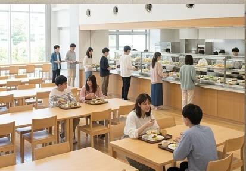

学生食堂
CAMPUS CAFETERIA

朕珍大学学生食堂について
朕珍大学学生食堂は、学生や教職員が 手頃な価格で食事を楽しめる キャンパス内の食事施設です。
授業の合間の昼食はもちろん、 放課後の軽食や友人との交流の場としても 多くの学生に利用されています。
利用案内
| 営業時間 |
平日 11:00～14:00 17:00～19:00 |
|---|---|
| 定休日 | 土曜日・日曜日・祝日 |
| 利用対象 | 学生・教職員・大学関係者 |
| 支払い方法 | 現金・学生証決済 |
主なメニュー
食堂の特徴
リーズナブルな価格
学生が毎日利用しやすいよう、 手頃な価格で食事を提供しています。
栄養バランス
主食・主菜・副菜を組み合わせ、 学生の健康を考えたメニューを 用意しています。
広々とした座席
一人でも友人同士でも利用できる 様々なタイプの座席を用意しています。
学生同士の交流
学部や学年を越えた交流の場としても 利用されています。
食堂からのお知らせ
混雑する昼休みの時間帯は、 譲り合ってご利用ください。
食事後は次の利用者のために、 テーブルをきれいにしてから 席をお立ちください。
大盛りを注文する際は、 本当に食べきれるかどうかを よく考えてから注文してください。